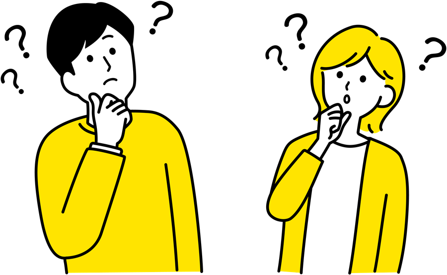

出願の流れ
STEP {{ st.no }}
{{ st.title }}
{{ st.text }}
出願準備チェックリスト
{{ doneLabel }}

準備完了！
あとは締切に余裕をもって出願しましょう。学費・奨学金Tuition & Scholarship
※具体的な金額・制度の条件は、各大学および各奨学金制度の公式情報をご確認ください。
For Parents
保護者の方へ
入試制度は保護者の方が受験された頃から大きく変わっています。お子さまと一緒に情報を確認し、早めに話し合っておくと安心です。
✓{{ pt }}
